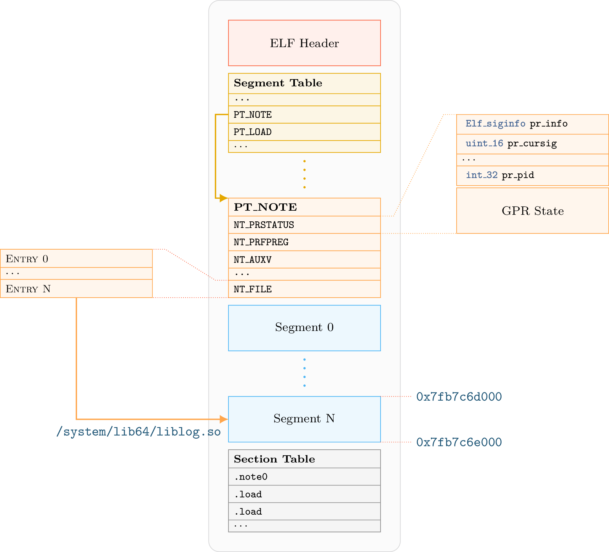
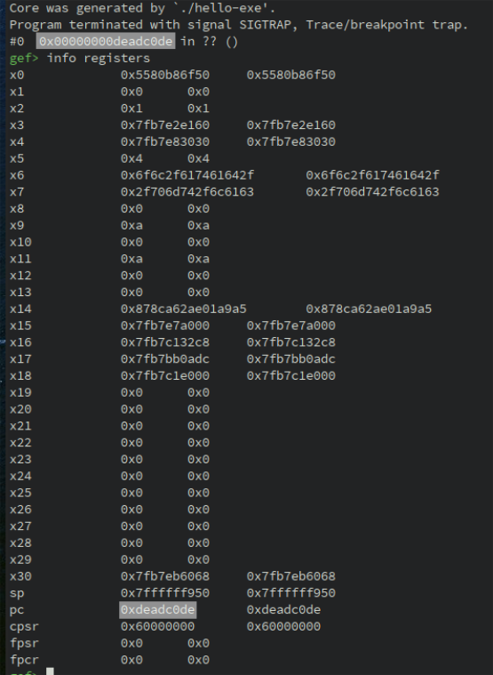

12 - ELF Coredump¶
This tutorial introduces the API to analyze and manipulate ELF coredump
Files and scripts used in this tutorial are available on the tutorials repository
Introduction¶
ELF core files provide information about the CPU state and the memory state of a program when the coredump has been generated. The memory state embeds a snapshot of all segments mapped in the memory space of the program. The CPU state contains register values when the core dump has been generated.
Coredump files use a subset of the ELF structures to register these information. Segments are used for
the memory state of the process while ELF notes (lief.ELF.Note) are used for process metadata (pid, signal, …)
Especially, the CPU state is stored in a note with a special type.
Here is an overview of coredump layout :

For more details about coredump internal structure, one can look at the following blog post: Anatomy of an ELF core file
Coredump Analysis¶
As corefiles are effectively ELF, we can open these files using the lief.parse() function:
import lief
core = lief.parse("ELF64_AArch64_core_hello.core")
We can iterate over the Segment objects to inspect the memory state of the program:
segments = core.segments
print("Number of segments {}".format(len(segments)))
for segment in segments:
print(hex(segment.virtual_address))
To resolve the relationship between libraries and segments, we can look at the special note lief.ELF.CoreFile:
note_file = [n for n in core.notes if n.type_core == lief.ELF.NOTE_TYPES_CORE.FILE]
assert len(note_file) == 1
note_file = note_file.pop()
Warning
Due to enum conflict between lief.ELF.NOTE_TYPES and lief.ELF.NOTE_TYPES_CORE,
scripts must use lief.ELF.Note.type_core on ELF corefile instead of lief.ELF.Note.type
The note_file variable is basically an object lief.ELF.Note on which the attribute
lief.ELF.Note.details can be access to have the underlying specialization of the note.
In the case of a note type lief.ELF.NOTE_TYPES_CORE.FILE, the attribute details returns an
instance of lief.ELF.CoreFile.
Note
All note details inherit from the base class lief.ELF.NoteDetails (or LIEF::ELF::NoteDetails)
Especially, in C++ we must downcast the reference returned by LIEF::ELF::Note::details():
note = ...
// Check Type
// ...
auto&& note_file = reinterpret_cast<const CoreFile&>(note.details());
We can eventually use the attribute lief.ELF.CoreFile.file or directly iterate on
the lief.ELF.CoreFile object. Both give access to the lief.ELF.CoreFileEntry: objects
for file_entry in note_file:
print(file_entry)
/data/local/tmp/hello-exe: [0x5580b86000, 0x5580b88000]@0
/data/local/tmp/hello-exe: [0x5580b97000, 0x5580b98000]@0x1000
/data/local/tmp/hello-exe: [0x5580b98000, 0x5580b99000]@0x2000
/system/lib64/libcutils.so: [0x7fb7593000, 0x7fb7595000]@0xf000
/system/lib64/libcutils.so: [0x7fb7595000, 0x7fb7596000]@0x11000
/system/lib64/libnetd_client.so: [0x7fb75fb000, 0x7fb75fc000]@0x2000
/system/lib64/libnetd_client.so: [0x7fb75fc000, 0x7fb75fd000]@0x3000
/system/lib64/libdl.so: [0x7fb7a2e000, 0x7fb7a2f000]@0x1000
/system/lib64/libdl.so: [0x7fb7a2f000, 0x7fb7a30000]@0x2000
/data/local/tmp/liblibhello.so: [0x7fb7b22000, 0x7fb7b2a000]@0xcb000
/data/local/tmp/liblibhello.so: [0x7fb7b2a000, 0x7fb7b2b000]@0xd3000
/system/lib64/libc.so: [0x7fb7c0e000, 0x7fb7c14000]@0xc5000
/system/lib64/libc.so: [0x7fb7c14000, 0x7fb7c16000]@0xcb000
/system/lib64/liblog.so: [0x7fb7c6c000, 0x7fb7c6d000]@0x16000
/system/lib64/liblog.so: [0x7fb7c6d000, 0x7fb7c6e000]@0x17000
/system/lib64/libc++.so: [0x7fb7d6f000, 0x7fb7d77000]@0xe2000
/system/lib64/libc++.so: [0x7fb7d77000, 0x7fb7d78000]@0xea000
/system/lib64/libm.so: [0x7fb7db8000, 0x7fb7db9000]@0x36000
/system/lib64/libm.so: [0x7fb7db9000, 0x7fb7dba000]@0x37000
/system/bin/linker64: [0x7fb7e93000, 0x7fb7f87000]@0
/system/bin/linker64: [0x7fb7f88000, 0x7fb7f8c000]@0xf4000
/system/bin/linker64: [0x7fb7f8c000, 0x7fb7f8d000]@0xf8000
From this output, we can see that the Segment of the main executable
(/data/local/tmp/hello-exe), are mapped from address 0x5580b86000 to address 0x5580b99000.
One can also access to the registers state by using the note whose the type_core
is lief.ELF.CorePrStatus.
for note in core.notes:
if note.type_core == lief.ELF.NOTE_TYPES_CORE.PRSTATUS:
details = note.details
print(details)
# Print instruction pointer
print(hex(details[lief.ELF.CorePrStatus.REGISTERS.AARCH64_PC]))
# or
print(hex(details.get(lief.ELF.CorePrStatus.REGISTERS.AARCH64_PC)))
0x5580b86f50
0x5580b86f50
Coredump manipulation¶
LIEF enables, to a certain extent, to modify coredump. For instance, we can update the register values as follows:
note_prstatus = [n for n in core.notes if n.type_core == lief.ELF.NOTE_TYPES_CORE.PRSTATUS][0]
note_prstatus.details[lief.ELF.CorePrStatus.REGISTERS.AARCH64_PC] = 0xDEADC0DE
core.write("/tmp/new.core")
When opening /tmp/new.core in GDB, we can observe the modification:

Final word¶
One advantage of the coredump over the raw binary is that relocations and dependencies are resolved inside the coredump.
This API could be used in association with other tools. For instance, we could use Triton API:
to map the coredump in Triton and then use its engines: Taint analysis, symbolic execution.
References
API